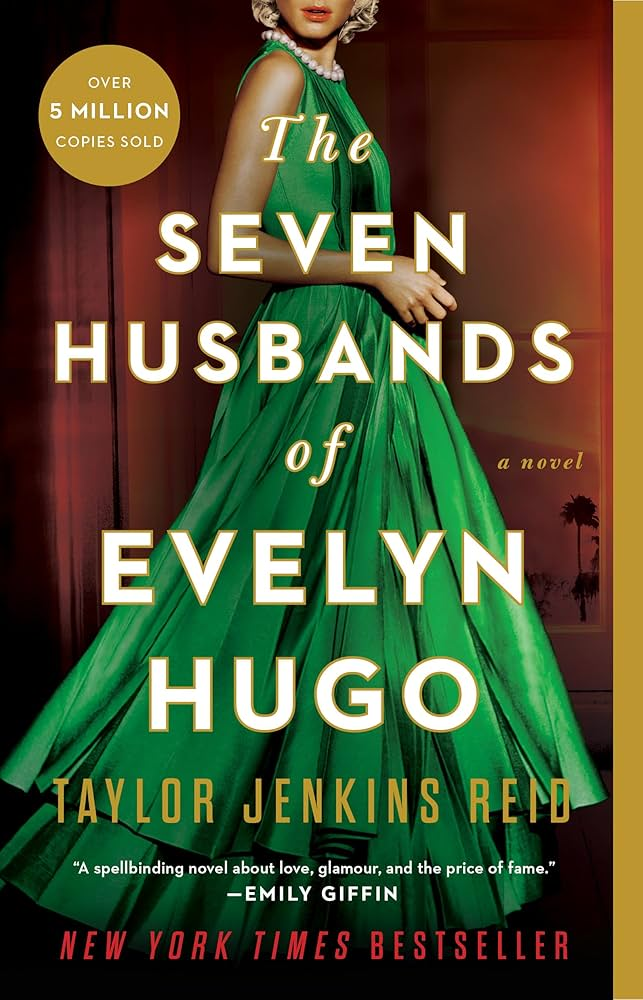
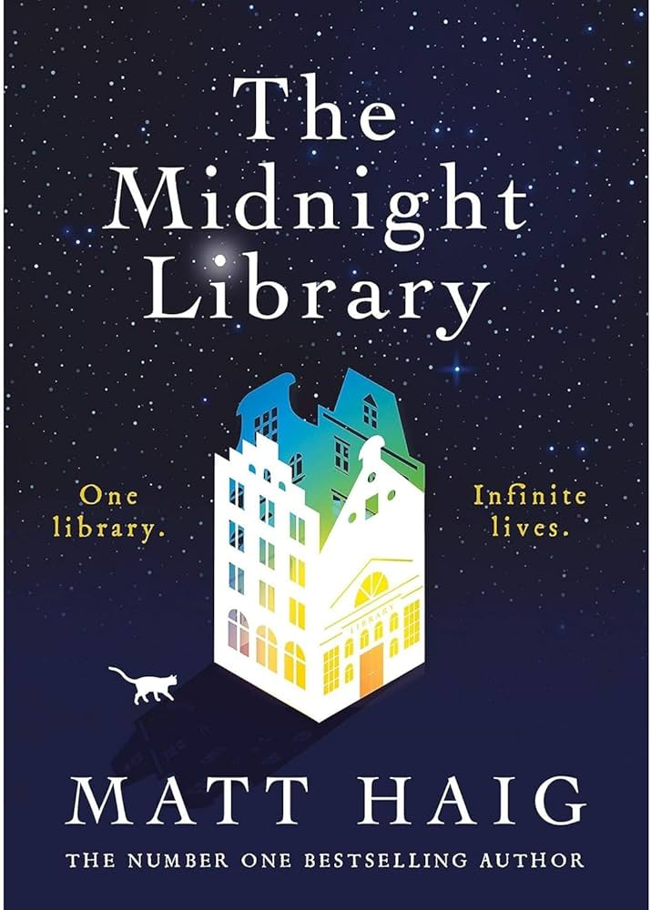
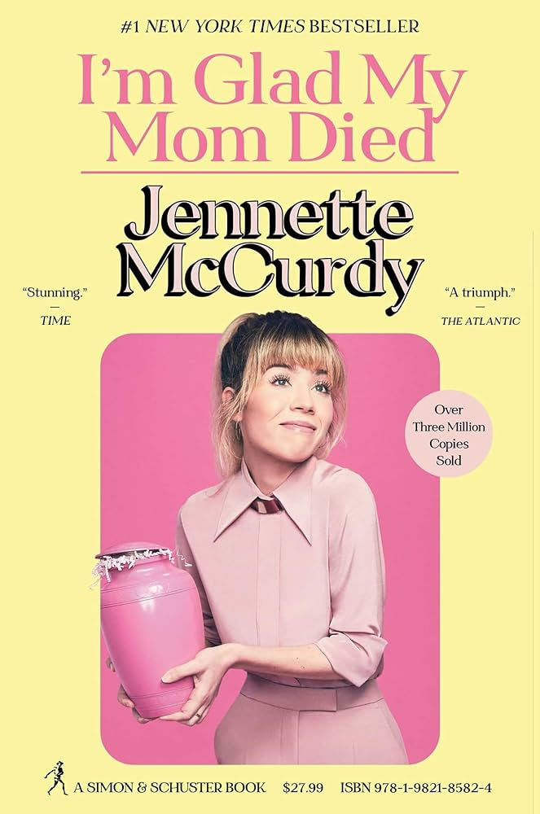
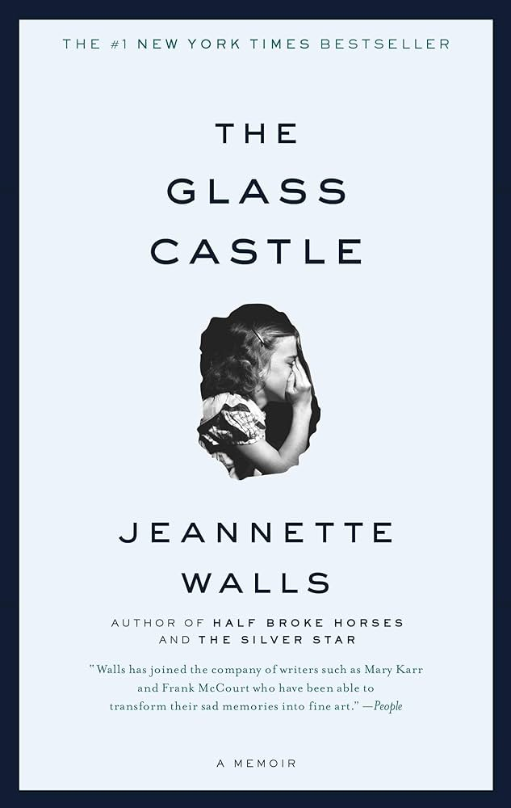
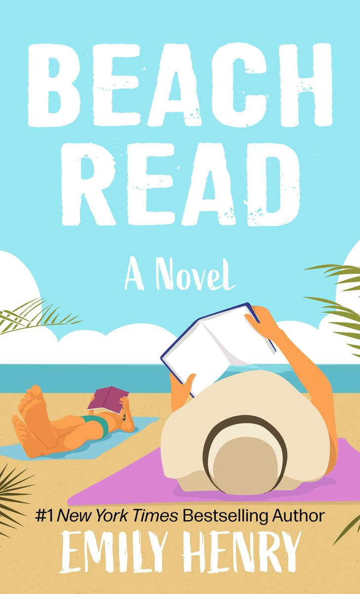
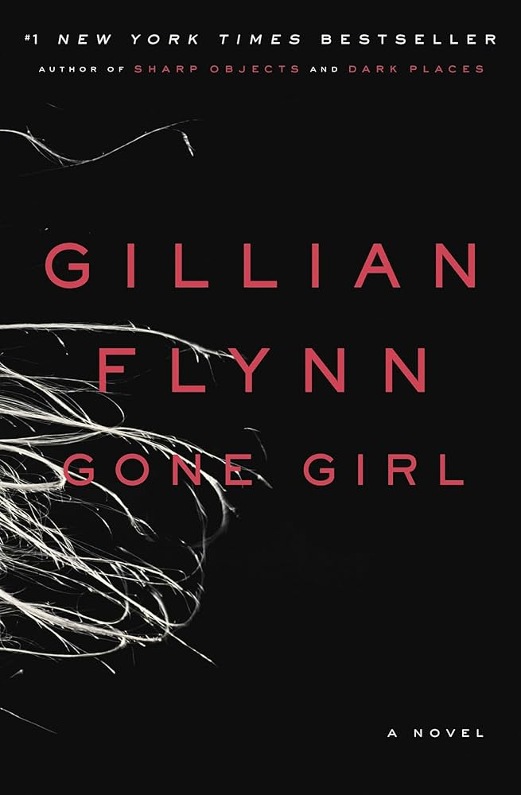
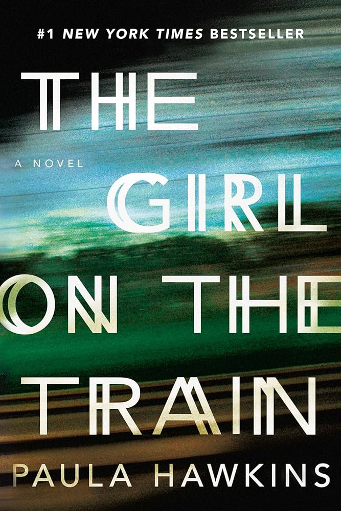
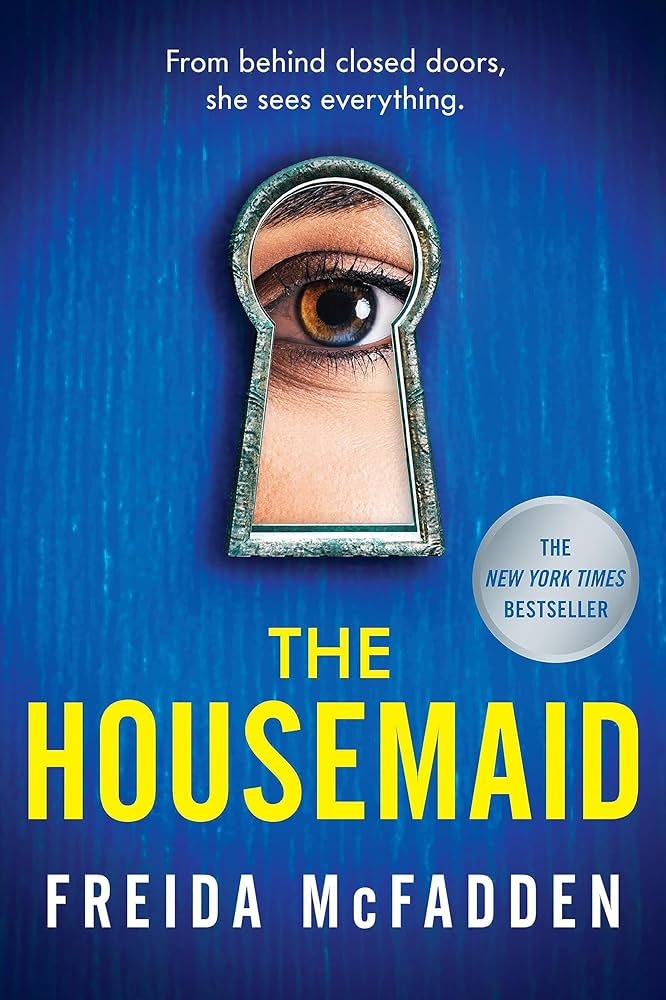
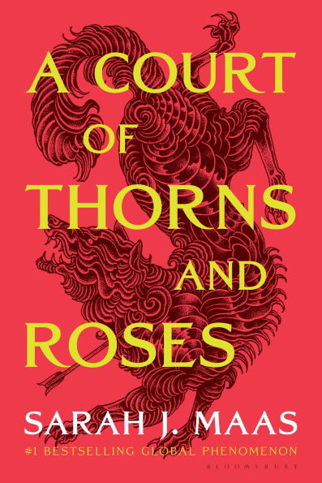
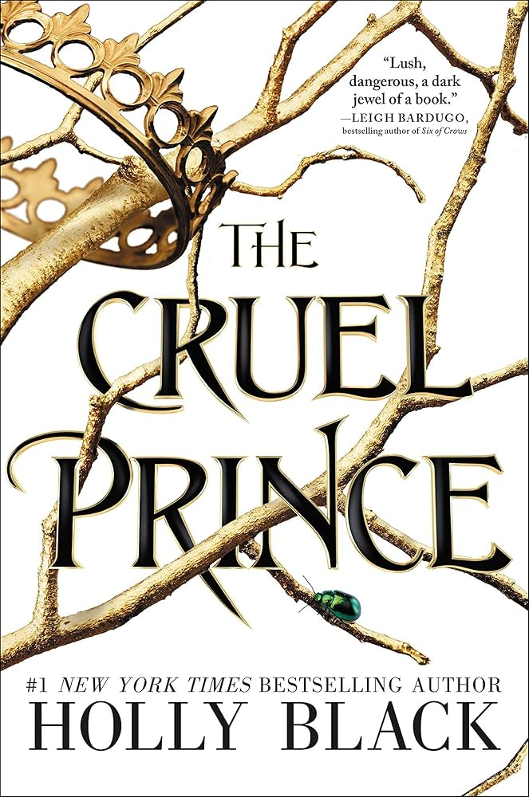

📖 Fiction 📚

The Seven Husbands of Evelyn Hugo — Taylor Jenkins Reid
Read Summary
A reclusive Hollywood icon finally tells the truth about her glamorous and scandalous life. Through a series of interviews, Evelyn reveals the secrets behind her seven marriages and the sacrifices she made for fame. As her story unfolds, deeper truths about love, identity, and ambition come to light.

The Midnight Library — Matt Haig
Read Summary
Nora Seed finds herself in a mysterious library between life and death. Each book allows her to explore a different version of her life based on choices she could have made. As she experiences alternate realities, she begins to understand regret, purpose, and what makes life meaningful.
📘 Nonfiction 📘

I’m Glad My Mom Died — Jennette McCurdy
Read Summary
Jennette McCurdy shares her experience growing up as a child actor under intense pressure from her mother. She opens up about struggles with identity, eating disorders, and the loss of her childhood. The memoir is honest, emotional, and focused on healing.

The Glass Castle — Jeannette Walls
Read Summary
Jeannette Walls tells the story of her unconventional and difficult childhood. Raised by flawed but charismatic parents, she faced poverty, instability, and neglect. Her memoir highlights resilience, survival, and the complicated love within families.
💕 Romance 💕

The Love Hypothesis — Ali Hazelwood
Read Summary
Olive, a PhD student, enters a fake relationship with a professor to convince her friends she has moved on. What starts as a simple arrangement slowly becomes more real. The story blends humor, academia, and heartfelt romance.

Beach Read — Emily Henry
Read Summary
Two writers with writer’s block become neighbors for the summer. They challenge each other to swap genres and step outside their comfort zones. As their rivalry softens, they build a deeper emotional connection.
🔎 Mystery 🕵️

Gone Girl — Gillian Flynn
Read Summary
When Amy Dunne goes missing, suspicion quickly falls on her husband, Nick. As the investigation unfolds, secrets and lies from their marriage begin to surface. The story is dark, twisty, and full of deception.

The Girl on the Train — Paula Hawkins
Read Summary
Rachel watches the same couple from her train every day and imagines their perfect life. When the woman disappears, Rachel becomes involved in the investigation. Her memory gaps make the truth even harder to uncover.
🔪 Thriller ✈️

The Silent Patient — Alex Michaelides
Read Summary
Alicia Berenson is accused of murdering her husband and then stops speaking entirely. A psychotherapist becomes obsessed with uncovering her motive. As he digs into her past, disturbing truths begin to appear.

The Housemaid — Freida McFadden
Read Summary
A woman takes a live-in housemaid job hoping for a fresh start. The job quickly becomes unsettling as strange rules and behaviors appear. The longer she stays, the more dangerous the house feels.
🐉 Fantasy 🐲

A Court of Thorns and Roses — Sarah J. Maas
Read Summary
Feyre, a human hunter, is taken to a magical fae land after killing a wolf. She discovers secrets about the fae world and the danger threatening it. The story mixes fantasy, romance, and adventure.

The Cruel Prince — Holly Black
Read Summary
Jude, a human girl, is raised in the dangerous High Court of Faerie. Determined to gain power, she becomes involved in court politics and betrayal. Her rivalry with Prince Cardan makes the story tense and exciting.